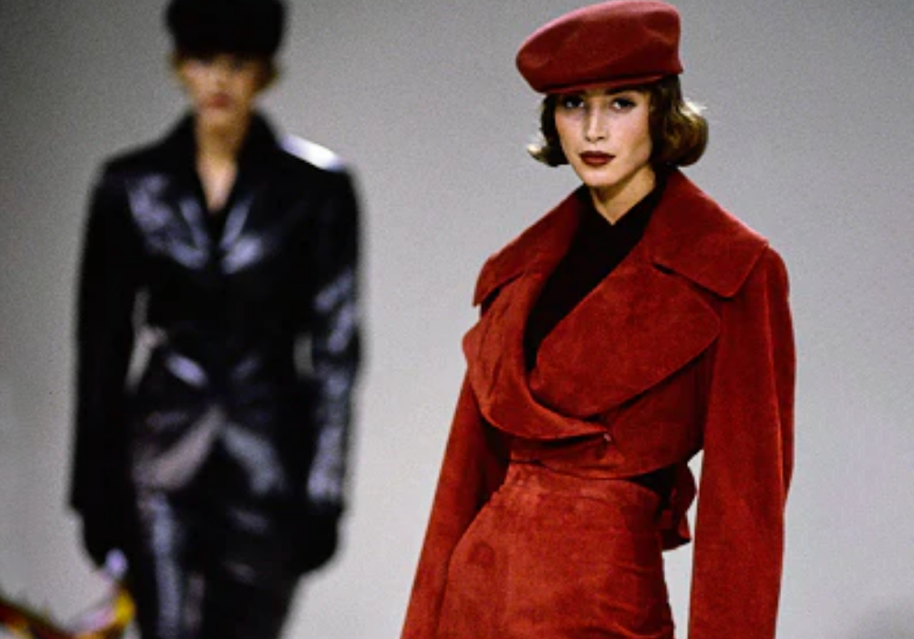
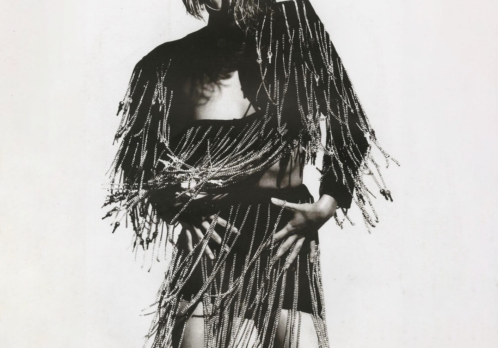
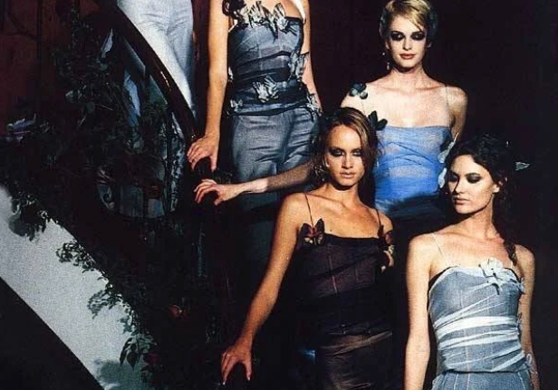
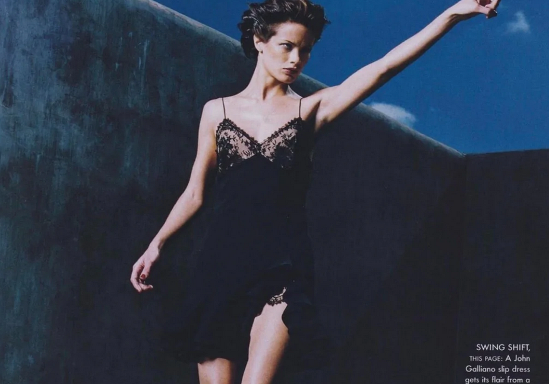
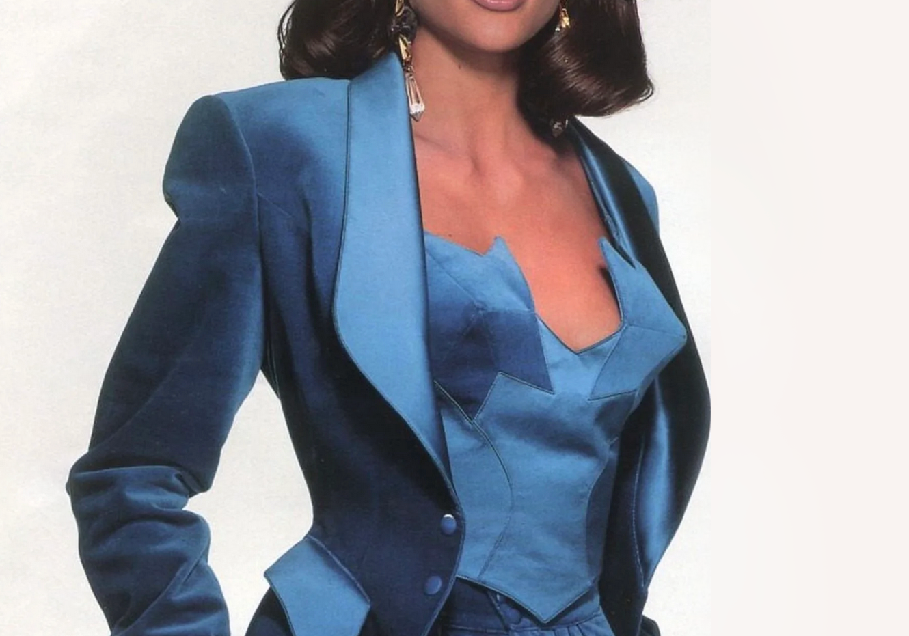
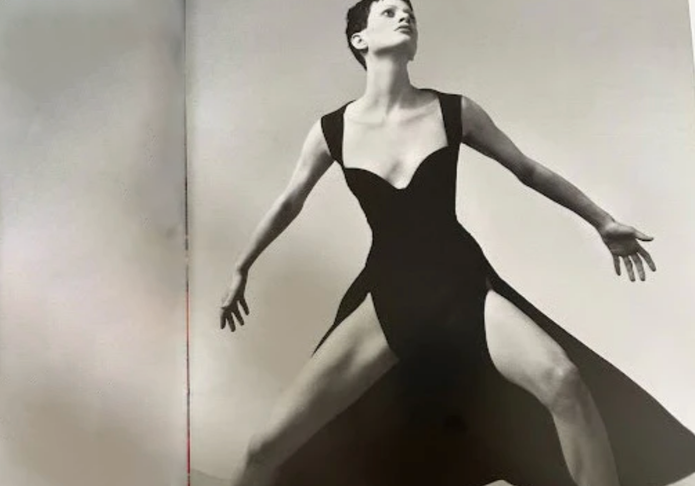
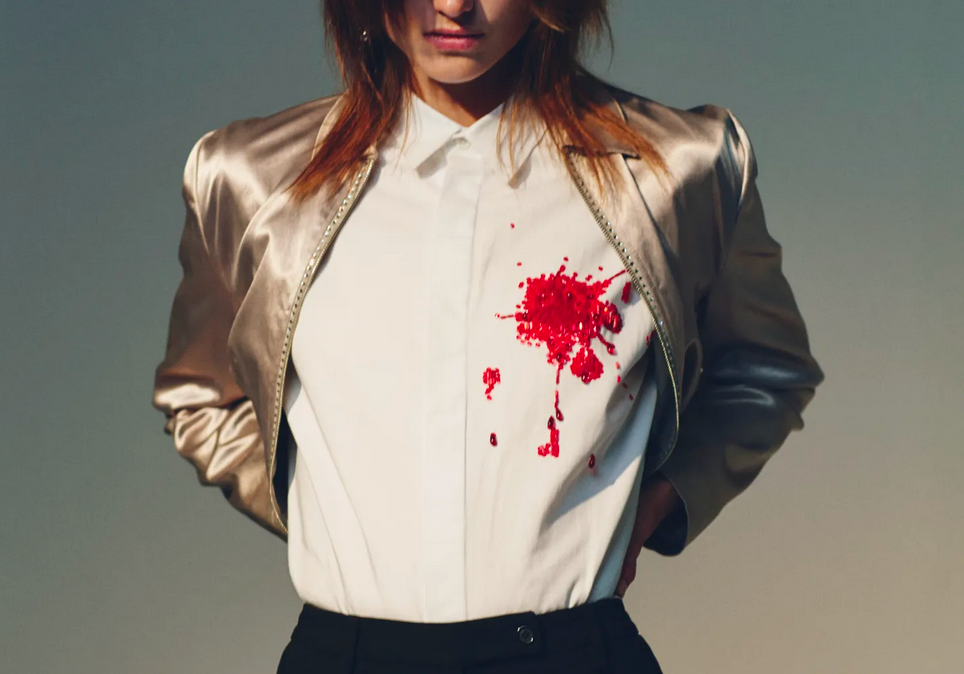
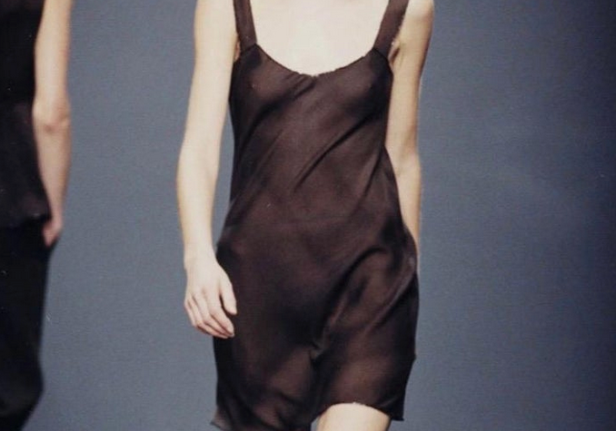
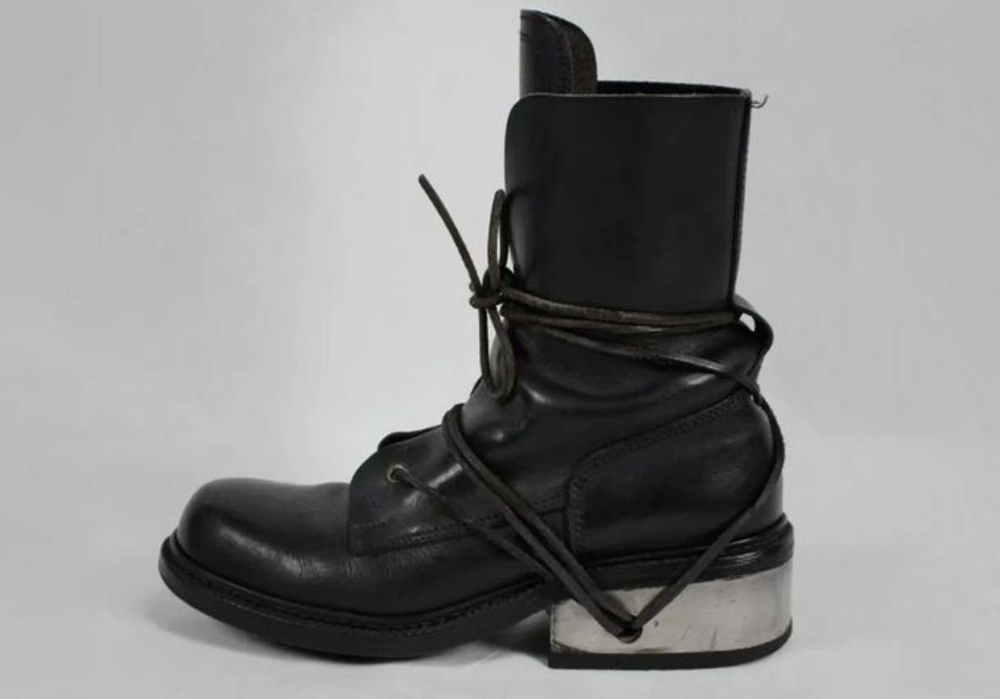
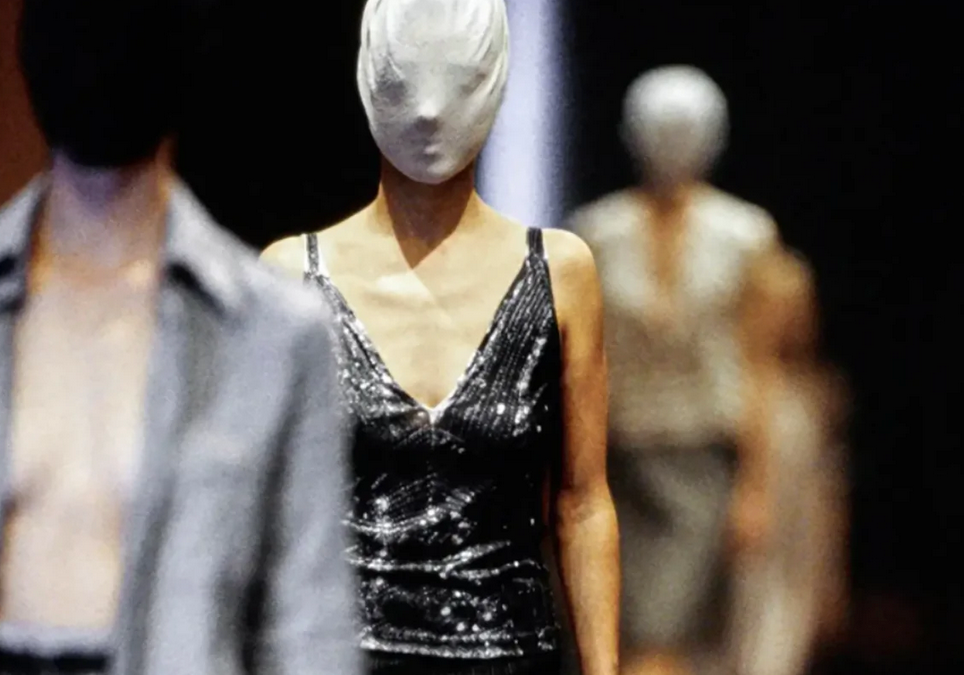

Archives
Runway
Pieces We Love
About
Subscribe
Pieces We Love

Azzedine Alaïa 1980’s Rust Blazer

Helen Storey 90's Fringe Dress

Dolce & Gabbana S/S 1998 Butterfly Dress

John Galliano S/S 1998 Black Silk Slip Dress

Thierry Mugler A/W 1992 Pant Set

Gianni Versace S/S 1993 Black Gown

Dior Blood Splatter Top

Prada F/W 1997 Sheer Green Dress

90s Dirk Bikkembergs Metal Heel Boots

1996 MARTIN MARGIELA Trompe L'oeil Set